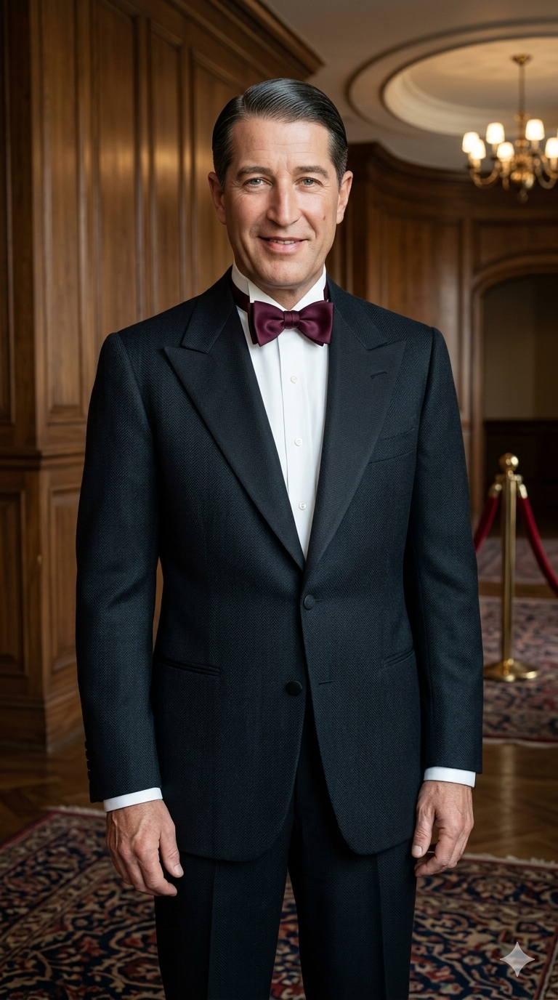

מוריס שבלייה
Maurice Chevalier
אטימולוגיה ומקור השם המלא
שם פרטי: מוריס (Maurice)
נגזר מהשם הלטיני העתיק Mauritius, שפירושו המילולי הוא "מורי" (Moorish) או תיאור לאדם "בעל עור כהה". השם התייחס במקור לתושבי מאוריטניה שביבשת אפריקה, ואומץ רבות באירופה בעקבות הקדוש הנוצרי מאוריציוס.
שם אמצעי: אוגוסט (Auguste)
מקורו בשפה הלטינית מהמילה Augustus. משמעותו היא "נשגב", "נערץ", "מלכותי" או "מקודש". בעת העתיקה זה היה תואר יוקרתי שניתן לקיסרי רומא וסימל כבוד רב וסמכות אלוהית.
שם משפחה: שבלייה (Chevalier)
מילה צרפתית ידועה שפירושה המילולי הוא "אביר". מבחינה אטימולוגית היא נגזרת מהמילה הלטינית המאוחרת caballarius (רוכב סוסים). היסטורית, שם משפחה זה הוענק לרוב לאנשים ששירתו כאבירים בשדה הקרב או לעובדים באורוות של משפחות אצולה בימי הביניים.
ילדות, משבר ונפילה בשבי
נטישה ועבודת כפיים: מוריס נולד במנילמונטן (Ménilmontant) - רובע פועלים עני וקשה בפריז. אביו, ויקטור, שהיה צבעי ושתיין כבד, נטש את המשפחה כשמוריס היה רק בן שמונה. נטישה זו הותירה את אמו האהובה (ז'וזפין) לגדל לבדה את ילדיה תוך עבודה מפרכת כתופרת. המצב הכלכלי אילץ את שבלייה לעזוב את בית הספר כבר בגיל 10. הוא עבד בעבודות מזדמנות כשוליית נגר, מתקן ציפורניים, ואף ניסה להיות אקרובט בקרקס (עד שפציעה חמורה קטעה חלום זה).
מלחמת העולם הראשונה והשבי: פרט ביוגרפי קריטי ופחות מוכר: כשפרצה מלחמת העולם הראשונה, שבלייה כבר החל לפתח קריירה בקברט, אך גויס מיד לחיל הרגלים של צבא צרפת. בשבועות הראשונים של המלחמה הוא נפצע מכדור בחזהו, נלכד על ידי הגרמנים ונשלח למחנה השבויים אלטנגראבוב (Altengrabow).
הנס של מחנה השבויים: שבלייה העביר במחנה השבויים 26 חודשים. שם, הוא פגש שבוי מלחמה בריטי בשם רונלד קנדי. מתוך שעמום וניסיון לשמור על שפיות, ביקש ממנו שבלייה ללמד אותו אנגלית במבטא מדויק. האנגלית המצוינת שלמד בשבי בגרמניה, היא זו שבזכותה כבש לימים את הוליווד ואת הקהל האמריקאי, דבר שהיה כמעט בלתי אפשרי לאמנים צרפתים אחרים שלא דברו את השפה.
אידאולוגיה והישגים
הישגים פורצי דרך בהוליווד: שבלייה היה אחד האמנים הצרפתים הראשונים והגדולים ביותר שכבשו את ארצות הברית והוליווד. הוא היה מועמד פעמיים לפרס האוסקר בשנות ה-30, וזכה בפרס אוסקר לשם כבוד בשנת 1958. הוא קיבע את דמות "המאהב הצרפתי" (French Lover) בתודעה העולמית.
אידאולוגיה וסמל תרבותי: בניגוד לזמרי השוליים של תקופתו, האידאולוגיה האמנותית של שבלייה סבבה סביב אלגנטיות, קסם אישי (Charm) ואסקפיזם מעודן. הסמלים המסחריים הבלתי נפרדים ממנו היו כובע הקש שטוח-התיתורה (Canotier), חליפת הטוקסידו היוקרתית ושרבוב השפתיים המפורסם תוך כדי חיוך. הוא ייצג את הפריזאיות השנונה והאופטימית המנותקת מקשיי היום-יום.
תקופת מלחמת העולם השנייה (מחלוקת וטיהור שמו): במהלך הכיבוש הנאצי, שהה בצרפת ואף הופיע מול חיילים בגרמניה, דבר שהוביל להאשמות כבדות בשיתוף פעולה (קולבורציון) מיד לאחר המלחמה. הוא נשפט וזוכה, לאחר שהוכיח כי הסכים להופיע בגרמניה אך ורק במחנה השבויים שבו היה כלוא במלחמת העולם הראשונה, ובתמורה דרש וקיבל את שחרורם של עשרה שבויי מלחמה צרפתים. לאחר זיכויו חזר להצלחה עולמית מסחררת.
השירים הגדולים
• מקורות מחקר:
- Ma route et mes chansons (1946) - ספר זיכרונותיו הראשון של שבלייה, המפרט את ילדותו ואת תקופת השבי.
- Maurice Chevalier: The Authorized Biography מאת אדוארד בירי (Edward Behr).
- ארכיוני משרד ההגנה הצרפתי - רישומי שבויי מלחמת העולם הראשונה (Stalag Altengrabow).